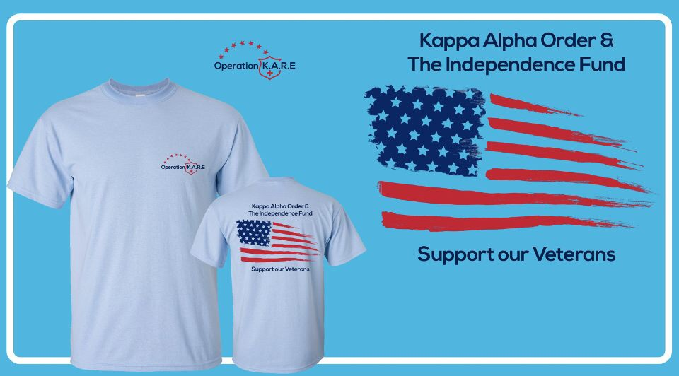

The “Zeta Phi” Chapter of Kappa Alpha Order is raising money to benefit a veteran in need. Steve was born and raised in High Point, NC. After high school he joined the US Army and became a Military Police Officer. His basic training was at Ft. McClellan, AL. From there he went to Ft. Hood, TX and was then sent to Stuttgart, Germany. Steve has been married for 32 years, has 2 children (Jennifer 30, Cody 25) and a new granddaughter. Steve was diagnosed with a variation of ALS, called PLS (Primary Lateral Sclerosis) in October of 2017 and was immediately advised to retire. Steve will never be able to walk on his own again. Please help us raise enough money to purchase an All Terrain Track Chair to give Steve his life back. More information about The Independence Fund: Founded in 2007, The Independence Fund is committed to empowering out nation's severely wounded, injured, or ill Veterans to overcome physical, mental, and emotional wounds incurred in the line of duty. The Independence Fund is dedicated to improving the lives of both our Veterans and their families through its Mobility, Caregiver, Adaptive Sports, and Advocacy Programs, which promote real change for the Veteran community nationally. To learn more about the mission, visit www.independencefund.org.
Include the follwing in your payment comment: